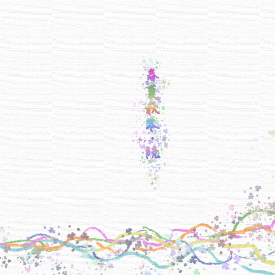

Colour
此专辑代表作为
《雨空》
网易云音乐评论数高达3500+,
钢琴类轻音乐,
作者:α·Pav,
据说还是江苏南京人,
创作音乐并不是他的主要工作,
但是他却能把如此动听的音乐带给我们,
还是要给他点赞!
1
春夏秋冬系列第一辑
自从听过此作者的《雨空》之后便沉迷于此无法自拔,
然后就发现了春夏秋冬系列的专辑.
很好听,
四个季节,四首风格不同的轻音乐,
每首都能带给我不一样的心境,
其中个人最喜欢的一首
永远なる夏
2

春夏秋冬系列第二辑
代表作《秋~华恋~》,网易云音乐评论数5000+,这也是轻音乐界中广为称赞的歌曲,具体感受我想只有亲自听够才能知晓吧.
3
春夏秋冬系列第三辑
这张专辑在网易云评论最少,但是其中确有我最爱听的一首.
《冬音》
8分41秒,每分每秒对我来说都是感动,
在我心目中排名前三的歌曲,随名为冬音,但每次听确总能给我温暖,希望.
真希望这首歌永远不被大众知晓.
4
春夏秋冬系列第四辑
这是春夏秋冬的最后一辑,发布于2014年10月6日,
个人认为本辑每首都是神曲,到底哪首最好听还是因人而异.
春夏秋冬到此画上句号,
对此我还是有些小失望的,
毕竟还想着能不能有后续.
不过我相信作者未来肯定会创作更加好听的音乐的.
5